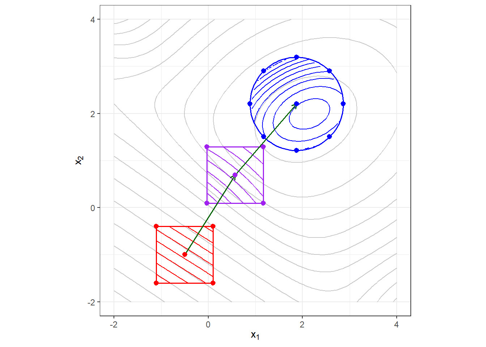
7 Metodologia de Superfície de Resposta
7.1 Introdução
A metodologia de superfície de resposta (response surface methodology - RSM) foi apresentada por Box e Wilson (1951) como uma proposta para modelagem e otimização via experimentos planejados, sendo inicialmente aplicada em experimentos químicos. Atualmente a RSM é aplicada em diversas áreas onde deseja-se modelar e otimizar uma determinada resposta \(y\) em função de \(k\) variáveis de controle \(x_1, x_2, \dots, x_k\). Dentro do contexto do DOE a RSM é um dos métodos mais usados para otimização em engenharia. As variáveis ditas de controle são independentes e podem ser referenciadas na literatura como variáveis preditoras, de controle ou de processo.
Pretende-se neste capítulo expor a busca de região de curvatura e teste via fatorial \(2^k\) com pontos centrais. Pretende-se também elucidar a metodologia de superfície de resposta, inclindo principais planejamentos, modelagem, análise de condições de otimalidade e otimização restrita.
Neste capítulo são utilizados os pacotes FrF2, rsm, ggplot2 e ggpubr, além das funções básicas do R. Recomenda-se a instalação destes utilizando o comando install.packages("<nome_pacote>"). A instalação é realizada uma única vez, porém o pacote deve ser carregado via library(<nome_pacote>) sempre que deseja-se usar suas funções.
7.2 Intuição
Considerando uma resposta \(y\) dependente dos níveis de \(k\) variáveis independentes e quantitativas, passíveis de controle e mensuração, dada a observação de \(N\) combinações dos níveis das \(k\) variáveis de controle, pode-se estimar um modelo de resposta de \(y\) em função de \(x_1, ..., x_k\), conforme segue
\[ y=f(\mathbf{x})+\varepsilon=f\left(x_1, x_2, \ldots, x_k\right)+\varepsilon\text{,} \]
com o erro experimental normalmente distribuído, \(\varepsilon \sim N(0,\sigma^2_\varepsilon)\).
O erro experimental, dada a existência de variáveis de ruído, faz com que o modelo de superfície de resposta seja uma aproximação para a resposta na região experimental \(k\) dimensional. A motivação para a aproximação de uma função desconhecida em uma determinada região é baseada na expansão da série de Taylor em torno do ponto \(\mathbf{x_0} =x_{10}, x_{20}, ..., x_{k0}\), \(u = 1, ..., N\). Por exemplo, considerando que uma aproximação de segunda ordem seja razoável para a região de interesse, um modelo de aproximação seria conforme Equação 7.1.
\[ \begin{equation} \begin{aligned} f \cong & f\left(x_{10}, x_{20}, \ldots, x_{k0}\right) + \sum_{i=1}^k \left.\frac{\partial f}{\partial x_i}\right|_{\mathbf{x}=\mathbf{x}_0} \left(x_i - x_{i0}\right) \\ & + \frac{1}{2} \sum_{i=1}^k \left.\frac{\partial^2 f}{\partial x_i^2}\right|_{\mathbf{x}=\mathbf{x}_0} \left(x_i - x_{i0}\right)^2 \\ & + \sum_{i < j} \left.\frac{\partial^2 f}{\partial x_i \partial x_j}\right|_{\mathbf{x}=\mathbf{x}_0} \left(x_i - x_{i0}\right)\left(x_j - x_{j0}\right) \end{aligned} \end{equation} \tag{7.1}\]
Onde:
\(\beta_0 = f\left(x_{10}, x_{20}, \ldots, x_{k0}\right)\);
\(\beta_i = \left.\frac{\partial f}{\partial x_i}\right|_{\mathbf{x}=\mathbf{x}_0}\) (termos lineares);
\(\beta_{ii} = \frac{1}{2} \left.\frac{\partial^2 f}{\partial x_i^2}\right|_{\mathbf{x}=\mathbf{x}_0}\) (termos quadráticos puros);
\(\beta_{ij} = \left.\frac{\partial^2 f}{\partial x_i \partial x_j}\right|_{\mathbf{x}=\mathbf{x}_0}\) (termos de interação).
O modelo final, após reparametrização, fica conforme Equação 7.2. Os termos quadráticos, \(\beta_{ii} x_i^2\), são a novidade em relação ao modelo obtido via fatorial \(2^k\). Este modelo é dito de segunda ordem completo, contendouma constante, \(k\) termos lineares, \(k\) termos quadráticos ou de segunda ordem puros e \(k(k-1)/2\) termos de interação de sgeunda ordem ou termos de segunda ordem mistos.
\[ y = \beta_0 + \sum_{i=1}^k \beta_i x_i + \sum_{i=1}^k \beta_{ii} x_i^2 + \sum_{i < j} \beta_{ij} x_i x_j + \varepsilon \tag{7.2}\]
O procedimento para encontrar a superfície de resposta pode seguir estratégia sequencial, envolvendo experimentos iniciais de varredura, busca da região de curvatura, estimativa de um modelo de superfície de resposta, até a obtenção das condições ótimas operacionais. Por exemplo, supondo um caso bidimensional com domínio experimental amplo, conforme observado na Figura 7.1, observa-se em cinza uma suposta função desconhecida de interesse. Para fins de modelagem e otimização, supõe-se inicialmente que o analista selecione a região delimitada pelo quadrado vermelho para um primeiro planejamento fatorial \(2^k\) com pontos centrais. A definição de uma região inicial pequena é razoável, visto que uma aproximação quadrática não seria suficiente para uma região ampla e complexa. Obtém-se para esta região um modelo linear. Define-se a direção de máximo crescimento da resposta a partir do gradiente da função linear estimada. Realiza-se outro planejamento fatorial \(2^k\) com pontos centrais. Obtém-se outro modelo linear e, analogamente, define-se a direção de máximo crescimento da resposta via gradiente. Finalmente, na terceira região a ser explorada, como o teste de curvatura realizado via fatorial \(2^k\) com pontos centrais indicou curvatura significativa, completa-se o planejamento com mais pontos e novos experimentos, definindo um planejamento com região circular observada em azul, viabilizando a obtenção de um modelo quadrático passível de otimização.
7.3 Planejamento fatorial \(2^k\) com pontos centrais
Em diversas situações um modelo linear pode não se ajustar bem à região experimental. Nestes casos o fatorial \(2^k\) não oferecerá um modelo de regressão útil em toda região experimental, especialmente para a região central do planejamento. Há casos também que o experimentador deseja testar a presença de curvatura, isto é, testar se um modelo quadrático se ajustaria melhor aos dados, para propósito de experimentação sequencial e busca dos níveis ótimos operacionais dos fatores de controle avaliados.
A adição de pontos centrais no fatorial \(2^k\) permite testar a presença de curvatura na região experimental. Os pontos centrais são condições intermediárias entre os dois níveis fatoriais, sendo codificados em \(x_{j(0)}=0\). O planejamento fatorial com pontos centrais permite testar a hipótese \(H_0: \sum\beta_{jj}=0\), onde \(\beta_{jj}\), \(j = 1, ..., k\) são os coeficientes quadráticos, sendo portanto multiplicados por \(x_j^2\), \(j = 1, ..., k\), em um modelo de regressão de segunda ordem completo almejado. O fatorial \(2^k\) com pontos centrais não permite, entretanto, estimar um modelo quadrático, visto que não tem níveis suficientes para tal finalidade. Entretanto, ele é um passo preliminar para a obtenção de um modelo com termos de segunda ordem puros (quadráticos), possibilitando a posterior realização de experimentos em níveis adicionais para viabilizar a obtenção de um modelo quadrático. Tal estratégia sequencial para metodologia de superfície de resposta pode ser efetivada via planejamento composto central.
O fatorial \(2^k\) com pontos centrais também permite a economia experimental pela replicação apenas na condição intermediária, especialmente nos casos com elevado número de fatores \(k\). Deste modo, ao se obter um modelo completo via fatorial \(2^k\) com pontos centrais, os graus de liberdade para o erro são calculados com base nos pontos centrais, sendo o erro experimental estimado tomando a variância dos pontos centrais, conforme Equação 5.8, onde \(y_{c(i)}\) é o i-ésimo ponto central e \(n_c\) é o número de pontos centrais.
\[ \hat{\sigma}^2 = MS_E = \frac{\displaystyle \sum_{i=1}^{n_c}(y_{c(i)}-\bar{y}_c)^2}{n_c-1} \tag{7.3}\]
Exemplo 7.1 A influência da temperatura, da concentração de catalisador e da razão molar álcool/óleo no rendimento da produção de uma fração de baixo peso molecular foi estudada e otimizada por meio de um planejamento fatorial. A fração é composta de ésteres de caprilato, caprato, laurato e miristato butílico, os quais podem ser usados como valorosos produtos químicos (devido a suas inúmeras aplicações nas indústrias cosmética, farmacêutica e de alimentos). O planejamento fatorial \(2^3\) com adição de pontos centrais foi inicialmente utilizado para testar curvatura e avaliar a possibilidade futura de obtenção de um modelo quadrático. O planejamento é exposto na Tabela 7.1.
| ordem | T [ºC] | C [%] | MR | y [%] |
|---|---|---|---|---|
| 1 | 55 | 3 | 3 | 38 |
| 2 | 75 | 3 | 3 | 49 |
| 3 | 55 | 7 | 3 | 59 |
| 4 | 75 | 7 | 3 | 49 |
| 5 | 55 | 3 | 7 | 39 |
| 6 | 75 | 3 | 7 | 59 |
| 7 | 55 | 7 | 7 | 65 |
| 8 | 75 | 7 | 7 | 75 |
| 9 | 65 | 5 | 5 | 63 |
| 10 | 65 | 5 | 5 | 62 |
| 11 | 65 | 5 | 5 | 58 |
| 12 | 65 | 5 | 5 | 60 |
O efeito dos pontos centrais \(E_{0}\) é calculado como a diferença entre médias entre os pontos centrais e os pontos axiais, conforme Equação 7.4, onde \(\bar{y}_{fat}\) é a média dos pontos fatoriais, enquanto \(\bar{y}_{ctpt}\) é a média dos pontos centrais.
\[ E_{0} = \bar{y}_{fat}-\bar{y}_{ctpt} \tag{7.4}\]
Para gerar o planejamento do Exemplo 7.1 pode-se utilizar o código à seguir.
library(FrF2)
# Planejamento
planctpt <- FrF2(nruns = 8,
nfactors = 3,
factor.names = c("T", "C", "MR"),
ncenter = 4,
randomize = F)
# Adicionando a coluna com a resposta
planctpt$y <- c(38, 49, 59, 49, 39, 59, 65, 75, 63, 62, 58, 60)
summary(planctpt)Call:
FrF2(nruns = 8, nfactors = 3, factor.names = c("T", "C", "MR"),
ncenter = 4, randomize = F)
Experimental design of type full factorial.center
12 runs
Factor settings (scale ends):
T C MR
1 -1 -1 -1
2 1 1 1
The design itself:
T C MR y
1 -1 -1 -1 38
2 1 -1 -1 49
3 -1 1 -1 59
4 1 1 -1 49
5 -1 -1 1 39
6 1 -1 1 59
7 -1 1 1 65
8 1 1 1 75
9 0 0 0 63
10 0 0 0 62
11 0 0 0 58
12 0 0 0 60
class=design, type= full factorial.center Para testar a curvatura, deve-se considerar a soma dos quadrados para curvatura, conforme Equação 7.5.
\[ SS_0 = \frac{n_{fat}n_{ctpt}(\bar{y}_{fat}-\bar{y}_{center})^2}{n_{fat}+n_{ctpt}} \tag{7.5}\]
Para obter a ANOVA com teste de curvatura, deve-se proceder conforme segue. Optou-se por adicionar uma coluna center no planejamento para testar curvatura. Posteriormente, adicionou-se o termo center no modelo. Outra opção, caso o analista não queira criar esta coluna seria adicionando o termo !iscube(planctpt) no modelo. Em caso de significância na curvatura, o modelo de regressão é útil desde que ao realizar previsão nos pontos centrais, seja somado o efeito dos pontos centrais. Já ao realizar previsão nos pontos fatoriais o efeito da curvatura deve ser desconsiderado.
Para o Exemplo 7.1 o teste de curvatura apresentou significância estatística, \(p-valor = 0,01646 < 0,05 = \alpha\). Consequentemente, é viável a realização de experimentos adicionais para estimar um modelo quadrático completo. Entretanto, este exemplo será retomado posteriormente para entendimento da estratégia sequencial para metodologia de superfície de resposta.
# Adicionando coluna para teste de curvatura
planctpt$center <- c(rep(0, times =8), rep(1, times = 4))
# Regressão teste de curvatura
lm1 <- lm(formula = y ~ T*C*MR + center, data = planctpt)
summary(lm1)
Call:
lm.default(formula = y ~ T * C * MR + center, data = planctpt)
Residuals:
1 2 3 4 5 6 7
3,053e-16 1,031e-16 -1,048e-16 -8,049e-17 -1,489e-16 -1,462e-17 2,309e-16
8 9 10 11 12
1,087e-16 2,250e+00 1,250e+00 -2,750e+00 -7,500e-01
Coefficients:
Estimate Std. Error t value Pr(>|t|)
(Intercept) 54,125 0,784 69,041 6,7e-06 ***
T 3,875 0,784 4,943 0,01588 *
C 7,875 0,784 10,045 0,00210 **
MR 5,375 0,784 6,856 0,00635 **
center 6,625 1,358 4,879 0,01646 *
T:C -3,875 0,784 -4,943 0,01588 *
T:MR 3,625 0,784 4,624 0,01904 *
C:MR 2,625 0,784 3,348 0,04411 *
T:C:MR 1,375 0,784 1,754 0,17772
---
Signif. codes: 0 '***' 0,001 '**' 0,01 '*' 0,05 '.' 0,1 ' ' 1
Residual standard error: 2,217 on 3 degrees of freedom
Multiple R-squared: 0,9884, Adjusted R-squared: 0,9576
F-statistic: 32,03 on 8 and 3 DF, p-value: 0,008# ANOVA
# anova1 <- aov(lm1)
# summary(anova1)A Figura 7.2 ilustra os gráficos de efeitos principais. Pode-se observar que a média da resposta nos pontos centrais confirma o indício de presença de curvatura na região experimental.
planctpt$fit <- lm1$fitted.values
meanc1 <- planctpt |>
group_by(T) |>
summarise(y=mean(fit))
meanc2 <- planctpt |>
group_by(C) |>
summarise(y=mean(fit))
meanc3 <- planctpt |>
group_by(MR) |>
summarise(y=mean(fit))
meanc1$ct <- ifelse(meanc1$T == 0, "0", "1")
meanc2$ct <- ifelse(meanc2$C == 0, "0", "1")
meanc3$ct <- ifelse(meanc3$MR == 0, "0", "1")
rangec <- c(min(meanc1$y,meanc2$y,meanc3$y),
max(meanc1$y,meanc2$y,meanc3$y))
pc1 <- ggplot(meanc1, aes(T,y,col = ct)) +
geom_line(lwd=1) +
geom_point(size=2) +
ylim(rangec) + theme(legend.position="none")
pc2 <- ggplot(meanc2, aes(C,y,col = ct)) +
geom_line(lwd=1) +
geom_point(size=2) +
ylim(rangec) + theme(legend.position="none")
pc3 <- ggplot(meanc3, aes(MR,y,col = ct)) +
geom_line(lwd=1) +
geom_point(size=2) +
ylim(rangec) + theme(legend.position="none")
library(ggpubr)
ggarrange(pc1,pc2,pc3, nrow=1)
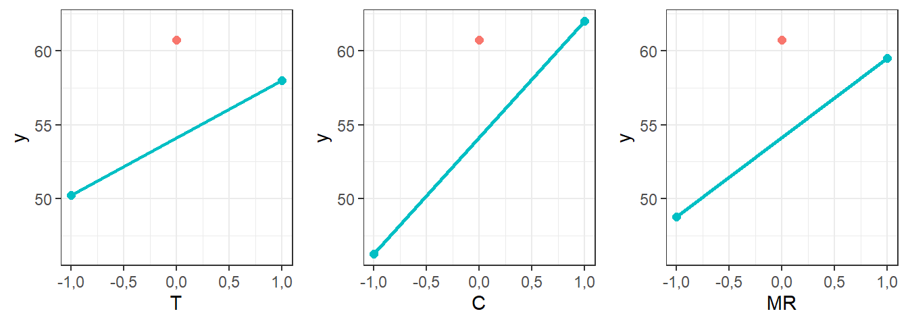
A Figura 7.3 ilustra os gráficos de interação de segunda ordem. Os pontos centrais são plotados à parte.
meanc12 <- planctpt |>
group_by(T,C) |>
summarise(y=mean(fit))
meanc13 <- planctpt |>
group_by(T,MR) |>
summarise(y=mean(fit))
meanc23 <- planctpt |>
group_by(C,MR) |>
summarise(y=mean(fit))
rangecc <- c(min(meanc12$y,meanc13$y,meanc23$y),
max(meanc12$y,meanc13$y,meanc23$y))
pc12 <- ggplot() +
geom_line(data = meanc12 |> filter(T != 0),
mapping = aes(x=T, y, col = as.factor(C),
shape = as.factor(C)), lwd=1) +
geom_point(data = meanc12 |> filter(T != 0),
mapping = aes(x=T, y, col = as.factor(C),
shape = as.factor(C)), size=2) +
geom_point(data = meanc12 |> filter(T == 0),
mapping = aes(x=T, y), shape=8, size=2) +
ylim(rangecc) +
labs(col = "C", shape = "C") +
theme(legend.position = "bottom")
pc13 <- ggplot() +
geom_line(data = meanc13 |> filter(T != 0),
mapping = aes(x=T, y, col = as.factor(MR),
shape = as.factor(MR)), lwd=1) +
geom_point(data = meanc13 |> filter(T != 0),
mapping = aes(x=T, y, col = as.factor(MR),
shape = as.factor(MR)), size=2) +
geom_point(data = meanc13 |> filter(T == 0),
mapping = aes(x=T, y), shape=8, size=2) +
ylim(rangecc) +
labs(col = "MR", shape = "MR") +
theme(legend.position = "bottom")
pc23 <- ggplot() +
geom_line(data = meanc23 |> filter(C != 0),
mapping = aes(x=C, y, col = as.factor(MR),
shape = as.factor(MR)), lwd=1) +
geom_point(data = meanc23 |> filter(C != 0),
mapping = aes(x=C, y, col = as.factor(MR),
shape = as.factor(MR)), size=2) +
geom_point(data = meanc23 |> filter(C == 0),
mapping = aes(x=C, y), shape=8, size=2) +
ylim(rangecc) +
labs(col = "MR", shape = "MR") +
theme(legend.position = "bottom")
library(ggpubr)
ggarrange(pc12,pc13,pc23, nrow=1)
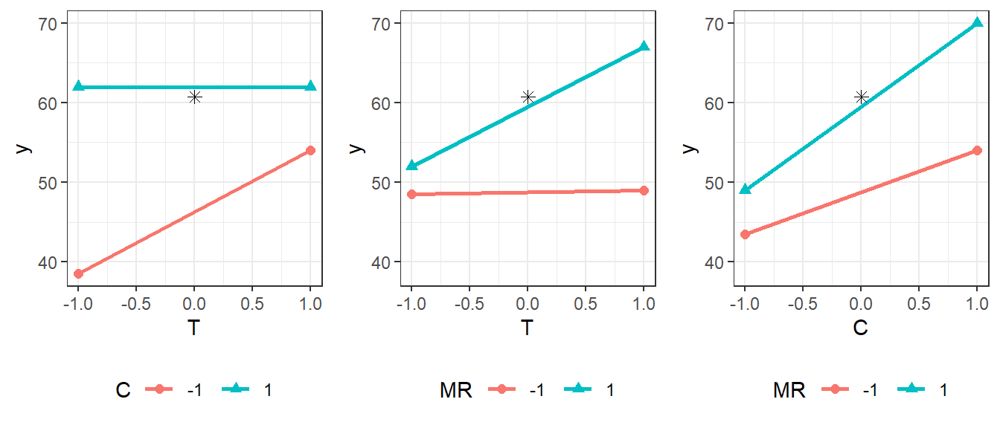
7.4 Planejamento composto central
O planejamento composto central (central composite design - CCD) apresenta boas propriedades de variância e tem sido extensivamente usado para obter modelos de superfície de resposta. O CCD possibilita a experimentação sequencial, garantindo economia na experimentação e busca de região de curvatura. Métodos como fatorial fracionado, blocagem do fatorial com pontos centrais e subida mais íngreme, conforme ilustrado na Figura 7.1 são comumente utilizados. Entretanto, em alguns problemas, devido a restrições de região experimental, realizar o CCD de forma direta é suficiente para obtenção de um modelo quadrático definitivo.
A Figura 7.4 ilustra o planejamento CCD para \(k = 2\) e \(k = 3\) variáveis de controle. Pode-se observar que o planejamento é composto de \(2^k\) pontos fatoriais (ou \(2^{k-p}\) pontos de um fatorial fracionado com resolução V ou maior de preferência), \(2k\) pontos axiais e \(nc\) pontos centrais. Este planejamento pode ser usado para obter um modelo na forma da Equação 7.2. A Tabela 7.2 apresenta um arranjo CCD genérico. A distância dos pontos axiais \(\rho\) e o número de pontos centrais é definida visando propriedades ótimas do planejamento e de previsão.
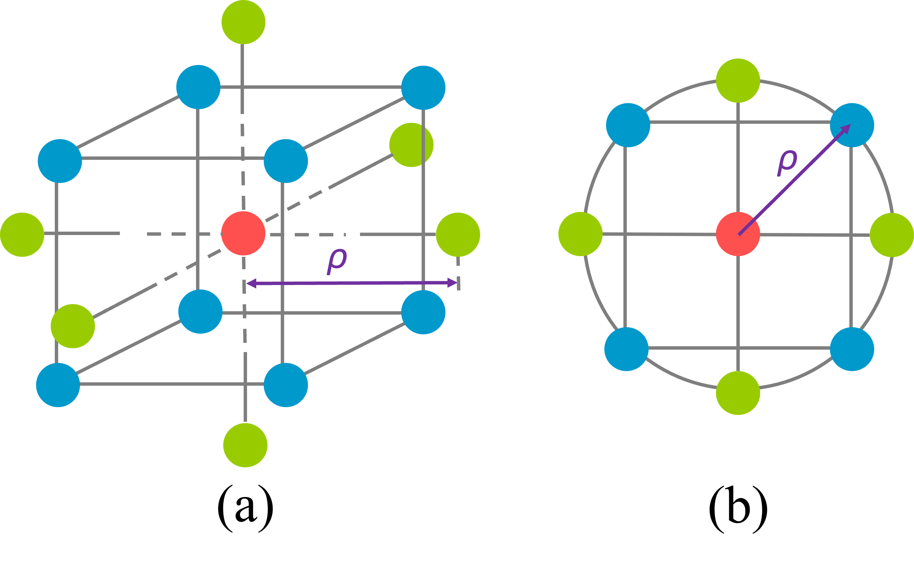
| ordem | x₁ | x₂ | ⋯ | xₖ |
|---|---|---|---|---|
| 1 | -1 | -1 | ⋯ | -1 |
| ⋮ | 1 | -1 | ⋯ | -1 |
| ⋮ | -1 | 1 | ⋯ | -1 |
| ⋮ | 1 | 1 | ⋯ | -1 |
| ⋮ | ⋮ | ⋮ | ⋯ | ⋮ |
| nf = 2k | 1 | 1 | ⋯ | 1 |
| 1 | -ρ | 0 | ⋯ | 0 |
| ⋮ | ρ | 0 | ⋯ | 0 |
| ⋮ | 0 | -ρ | ⋯ | 0 |
| ⋮ | 0 | ρ | ⋯ | 0 |
| ⋮ | ⋮ | ⋮ | ⋯ | ⋮ |
| ⋮ | 0 | 0 | ⋯ | -ρ |
| na = 2k | 0 | 0 | ⋯ | ρ |
| 1 | 0 | 0 | ⋯ | 0 |
| ⋮ | ⋮ | ⋮ | ⋯ | ⋮ |
| nc | 0 | 0 | ⋯ | 0 |
Pelas ilustrações da Figura 7.4, pode-se inferir que o CCD se limita a uma região experimental esférica. O valor do raio do planejamento, \(\rho\), pode ser considerado igual a \(\sqrt{k}\) para que esta região seja um círculo, esfera ou hiperesfera perfeita. No entanto, Box definiu que o ideal para obter um CCD dito rotacionável é que \(\rho = 2^{k/4}\). Um CCD rotacionável seria aquele no qual a variância do modelo se mantenha constante em pontos equidistanciados do centro do planejamento ou, de forma análoga, que a variância e covariância dos efeitos não seja alterada pela rotação do planejamento ou modelo. A rotação às vezes é importante, por exemplo ao diagonalizar o modelo para verificar as condições de otimalidade de primeira ordem, ou caracterizar a superfície de resposta. A título de exemplo a seguir expõe-se o código para obtenção de um CCD para \(k = 3\). Observa-se que \(\rho = 2^{k/4} = 1,6818\). É possível obter um CCD esférico fazendo alpha = "spherical". Nos casos quando o número de fatores \(k\) é par o CCD rotacionável é perfeitamente esférico. Em casos onde a região experimental é restrita e deseja-se que a distância dos pontos axiais não seja maior que a dos fatoriais, faz-se alpha = "faces", obtendo um CCD de face centrada (face-centered central composite design - FCD). O CCD permite a blocagem da sequência experimental, caso inicalmente seja realizado o fatorial compontos centrais, conforme observado na última coluna. Porém, é necessário que sejam alocados pontos centrais na parte fatorial com o argumento n0.
library(rsm)
ccd(3,
n0 = c(0,3),
alpha = "rotatable",
randomize = F
) run.order std.order x1.as.is x2.as.is x3.as.is Block
1 1 1 -1,000000 -1,000000 -1,000000 1
2 2 2 1,000000 -1,000000 -1,000000 1
3 3 3 -1,000000 1,000000 -1,000000 1
4 4 4 1,000000 1,000000 -1,000000 1
5 5 5 -1,000000 -1,000000 1,000000 1
6 6 6 1,000000 -1,000000 1,000000 1
7 7 7 -1,000000 1,000000 1,000000 1
8 8 8 1,000000 1,000000 1,000000 1
9 1 1 -1,681793 0,000000 0,000000 2
10 2 2 1,681793 0,000000 0,000000 2
11 3 3 0,000000 -1,681793 0,000000 2
12 4 4 0,000000 1,681793 0,000000 2
13 5 5 0,000000 0,000000 -1,681793 2
14 6 6 0,000000 0,000000 1,681793 2
15 7 7 0,000000 0,000000 0,000000 2
16 8 8 0,000000 0,000000 0,000000 2
17 9 9 0,000000 0,000000 0,000000 2
Data are stored in coded form using these coding formulas ...
x1 ~ x1.as.is
x2 ~ x2.as.is
x3 ~ x3.as.isNo CCD os pontos fatoriais ou fracionados são usados para estimar os efeitos lineares e interações de segunda ordem. Os pontos centrais ajudam a estimar o erro experimental e contribuem para estimar os termos quadráticos. Os pontos axiais tem grande contribuição na estimativa dos termos quadráticos, de forma que sem eles somente o somatório dos termos quadráticos, \(\sum \beta_{ii}\), seria obtido, o que é usado para testar curvatura.
Nos planejamentos fatoriais a ortogonalidade do planejamento é uma propriedade que garante independência das variáveis de controle, baixa variância dos coeficientes, independência dos coeficientes e boa capacidade de previsão do modelo de resposta. Entretanto, em planejamentos de segunda ordem a ortogonalidade não é uma propriedade presente de forma a garantir a total independência dos coeficientes de regressão.
Exemplo 7.2 Seja um experimento para determinar o conteúdo de cobre em diferentes amostras de água via espectrometria de emissão óptica. Os fatores de controle são x1: \(pH\) e x2: vazao - \(vz\) (\(mL/min\)). Os níveis fatoriais são 7 e 9 para pH e 7 e 9 \(mL/min\) para \(vz\). A resposta consiste no sinal analítico resultante das medições de altura de pico instrumental. Uma vez medidos tais valores para os experimentos realizados, o maior foi considerado como 100 e os demais como porcentagem deste máximo (sinal analítico relativo). Foi utilizado um CCD rotacionável e RSM para inferência, modelagem e otimização. https://doi.org/10.1016/j.jhazmat.2010.07.014
A Tabela 7.3 apresenta o planejamento considerado já com os resultados da resposta. O código apresentado em sequência pode ser usado para obtenção deste CCD e armazenamento da resposta. Pode-se observar que os fatores podem ser definidos de forma decodificada, ou seja, nas unidades originais. Por exemplo \(x_1\) consiste na vazão codificada, isto é, \(x_1 = (vz-8)/1\), onde 8 seria o nível central da vazão (a média dos fatoriais) e o denominador, neste caso unitário, consiste na distância entre os pontos fatoriais e o central.
# Planejamento CCD
ccd1 <- ccd(basis = ~x1+x2,
n0 = c(0,3),
alpha = "rotatable",
randomize = FALSE,
oneblock=TRUE,
coding = list(x1 ~ (vz - 8)/1, # mL/min
x2 ~ (pH - 8)/1)) # -
# resposta - sinal analitico relativo
y <- c(68.64, 69.82, 81.66, 85.80,
79.29, 87.57, 74.56, 94.08,
100, 99.41, 100)
# adicionando resposta ao planejamento
ccd1$y <- y| run.order | std.order | vz | pH | y |
|---|---|---|---|---|
| 1 | 1 | 7,000000 | 7,000000 | 68,64 |
| 2 | 2 | 9,000000 | 7,000000 | 69,82 |
| 3 | 3 | 7,000000 | 9,000000 | 81,66 |
| 4 | 4 | 9,000000 | 9,000000 | 85,80 |
| 1 | 1 | 6,585786 | 8,000000 | 79,29 |
| 2 | 2 | 9,414214 | 8,000000 | 87,57 |
| 3 | 3 | 8,000000 | 6,585786 | 74,56 |
| 4 | 4 | 8,000000 | 9,414214 | 94,08 |
| 5 | 5 | 8,000000 | 8,000000 | 100,00 |
| 6 | 6 | 8,000000 | 8,000000 | 99,41 |
| 7 | 7 | 8,000000 | 8,000000 | 100,00 |
7.5 Estimativa dos coeficientes de regressão
Seja o modelo da Equação 7.2 escrito de forma expandida conforme Equação 7.6.
\[ y=\beta_0+\beta_1 x_1+\ldots+\beta_k x_k+\beta_{11} x_1^2+\ldots+\beta_{k k} x_k^2+\beta_{12} x_1 x_2+\ldots+\beta_{(k-1)(k)} x_{(k-1)} x_{(k)}+\varepsilon \tag{7.6}\]
Em notação matricial, para facilitar a obtenção das estimativas de mínimos quadrados para os coeficientes, o modelo na forma da Equação 7.2 e da Equação 7.6, de forma análoga ao modelo obtido va fatorial \(2^k\), também pode ser representado como \(\mathbf{y}=X \boldsymbol{\beta}+\boldsymbol{\varepsilon}\), com os devidos ajustes nas matrizes e vetores:
\[ \begin{aligned} & \mathbf{y}=\left[\begin{array}{c} y_1 \\ y_2 \\ \vdots \\ y_N \end{array}\right] ; \quad \mathbf{X}=\left[\begin{array}{cccccccccc} 1 & x_{1(-)} & \cdots & x_{k(-)} & x_1^2 & \cdots & x_k^2 & x_{1(-)} x_{2(-)} & \cdots & x_{k-1(-)} x_{k(-)} \\ 1 & x_{1(+)} & \cdots & x_{k(-)} & x_1^2 & \cdots & x_k^2 & x_{1(+)} x_{2(-)} & \cdots & x_{k-1(-)} x_{k(-)} \\ \vdots & \vdots & \ddots & \vdots & \vdots & \ddots & \vdots & \vdots & \ddots & \vdots \\ 1 & x_{1(+)} & \cdots & x_{k(+)} & x_1^2 & \cdots & x_k^2 & x_{1(+)} x_{2(+)} & \cdots & x_{k-1(-)} x_{k(-)} \end{array}\right] ; \\ & \boldsymbol{\beta}=\left[\begin{array}{c} \beta_0 \\ \beta_1 \\ \vdots \\ \beta_k \\ \beta_{11} \\ \vdots \\ \beta_{k k} \\ \beta_{12} \\ \vdots \\ \beta_{(k-1)(k)} \end{array}\right]; \text{ } \boldsymbol{\varepsilon}=\left[\begin{array}{c} \varepsilon_1 \\ \varepsilon_2 \\ \vdots \\ \varepsilon_N \end{array}\right] \end{aligned}. \]
Onde o vetor de respostas \(\mathbf y\) é da ordem \(N \times 1\), a matriz do planejamento \(\mathbf{X}\) é da ordem \(N \times r\), o vetor de coeficientes \(\boldsymbol{\beta}\) é da ordem \(r \times 1\) e o vetor do erro aleatório é da ordem \(N \times 1\), sendo \(N = 2^k + 2k + n_c\) e \(r = 1 + 2^k + 2k + k(k − 1)/2\) para um modelo de resposta completo correspondente à Equação 7.6. Os coeficientes podem ser estimados pelo método dos mínimos quadrados, \(\hat{\boldsymbol{\beta}}=\left(\mathbf{X}^{\mathbf{T}} \mathbf{X}\right)^{-1} \mathbf{X}^{\mathbf{T}} \mathbf{y}\). A variância do modelo de superfície de resposta depende da matriz do planejamento \(\mathbf X\), com covariância \(\left(\mathbf{X}^{\mathbf{T}} \mathbf{X}\right)^{-1}\), do ponto avaliado, que em um modelo quadrático completo é da forma \(\mathbf x_0^T = [1, x_1, \dots,x_k, x_{11}, \dots,x_{kk}, x_1x_2, \dots, x_{k-1}x_k]^T\), e do erro experimental \(\hat\sigma^2 = \sqrt{MS_E}\), isto é, \(Var[\hat {\mathbf y}(\mathbf x)]=\mathbf x_0^T\left(\mathbf{X}^{\mathbf{T}} \mathbf{X}\right)^{-1}\mathbf x_0\).
Considerando o exemplo Exemplo 6.2 a seguir expõe-se a sintaxe para obtenção do modelo de regressão de superfície de resposta. Pode-se observar que o comando lm é utilizado, assim como no fatorial \(2^k\). Os termos quadráticos são adicionados usando a sintaxe I(xj^2). Para o estudo em questão observa-se que o termo linear do pH, o termo quadrático tanto da vazão quanto do pH foram significativos, além da constante.
lm1 <- lm(y ~ (x1+x2)^2 + I(x1^2) + I(x2^2), data = ccd1)
summary(lm1)
Call:
lm.default(formula = y ~ (x1 + x2)^2 + I(x1^2) + I(x2^2), data = ccd1)
Residuals:
1 2 3 4 5 6 7 8 9 10
-3,0731 -4,6705 -2,7245 -4,3219 2,5680 4,8270 3,9440 3,4510 0,1967 -0,3933
11
0,1967
Coefficients:
Estimate Std. Error t value Pr(>|t|)
(Intercept) 99,803 2,768 36,052 3,09e-07 ***
x1 2,129 1,695 1,256 0,26470
x2 7,076 1,695 4,174 0,00871 **
I(x1^2) -10,035 2,018 -4,974 0,00420 **
I(x2^2) -9,590 2,018 -4,753 0,00509 **
x1:x2 0,740 2,397 0,309 0,77002
---
Signif. codes: 0 '***' 0,001 '**' 0,01 '*' 0,05 '.' 0,1 ' ' 1
Residual standard error: 4,795 on 5 degrees of freedom
Multiple R-squared: 0,9176, Adjusted R-squared: 0,8352
F-statistic: 11,14 on 5 and 5 DF, p-value: 0,009668# summary(aov(lm1))O modelo pode ser reduzido, usando o comando step, conforme segue. É importante notar que a estrutura hierárquica se mantém, de forma que a avaliação da eliminação de um termo linear só será realizada durante o algoritmo de eliminação caso o termo quadrático e os de interação que o involvem forem eliminados antes. Observa-se que o ajuste do modelo passou de 0,8352 para 0,8601 após a redução.
lm1_red <- step(lm1)Start: AIC=37,81
y ~ (x1 + x2)^2 + I(x1^2) + I(x2^2)
Df Sum of Sq RSS AIC
- x1:x2 1 2,19 117,14 36,020
<none> 114,95 37,813
- I(x2^2) 1 519,39 634,35 54,602
- I(x1^2) 1 568,71 683,66 55,425
Step: AIC=36,02
y ~ x1 + x2 + I(x1^2) + I(x2^2)
Df Sum of Sq RSS AIC
<none> 117,14 36,020
- x1 1 36,25 153,39 36,986
- x2 1 400,52 517,66 50,366
- I(x2^2) 1 519,39 636,54 52,640
- I(x1^2) 1 568,71 685,85 53,460summary(lm1_red)
Call:
lm.default(formula = y ~ x1 + x2 + I(x1^2) + I(x2^2), data = ccd1)
Residuals:
Min 1Q Median 3Q Max
-5,4105 -2,8988 0,1967 3,0095 4,8270
Coefficients:
Estimate Std. Error t value Pr(>|t|)
(Intercept) 99,803 2,551 39,122 1,86e-08 ***
x1 2,129 1,562 1,363 0,22192
x2 7,076 1,562 4,529 0,00398 **
I(x1^2) -10,035 1,859 -5,397 0,00167 **
I(x2^2) -9,590 1,859 -5,158 0,00210 **
---
Signif. codes: 0 '***' 0,001 '**' 0,01 '*' 0,05 '.' 0,1 ' ' 1
Residual standard error: 4,419 on 6 degrees of freedom
Multiple R-squared: 0,916, Adjusted R-squared: 0,8601
F-statistic: 16,36 on 4 and 6 DF, p-value: 0,0022197.6 Condições de otimalidade de primeira ordem
Após apresentação do planejamento composto central e suas propriedades, além da obtenção do modelo de regressão, convém expor uma forma analítica para possibilitar a avaliação das condições de otimalidade de primeira ordem ou obtenção do ponto estacionário. O modelo exposto na Equação 7.6 também pode ser exposto em outra notação, sendo esta útil para otimização, conforme Equação 7.7:
\[ \hat y = \beta_0 + \mathbf{x}^T\mathbf b + \mathbf{x}^T\mathbf B \mathbf x\text{ ,} \tag{7.7}\]
onde \(\beta_0\) é a estimativa da constante, \(\mathbf{x}\) é o vetor das \(k\) variáveis de controle de ordem \(k \times 1\), \(\mathbf b\) é o vetor de coeficientes lineares de ordem \(k \times 1\) e \(\mathbf B\) é a matriz simétrica que contém os termos quadráticos e de interação de ordem \(k \times k\), conforme segue. Pode-se averiguar que os elementos da diagonal principal desta matriz são responsáveis pelos efeitos quadráticos, enquanto os outros elementos contribuem para a obtenção dos termos de interação.
\[ \mathbf b = \left[\begin{array}{c} \beta_1 \\ \beta_2 \\ \vdots \\ \beta_k \end{array}\right]\text{, } \mathbf x = \left[\begin{array}{c} x_1 \\ x_2 \\ \vdots \\ x_k \end{array}\right]\text{, } \mathbf{X} = \left[\begin{array}{cccc} \beta_{11} & \beta_{12}/2 & \cdots & \beta_{1k}/2 \\ & \beta_{22} & \cdots & \beta_{2k}/2 \\ & & \ddots & \vdots \\ \text{sym} & & & \beta_{kk} \end{array}\right] \\ \]
Para obter o ponto de inflexão ou estacionário, que são as condições de otimalidade de primeira ordem, iguala-se o gradiente da função a zero e resolve-se para \(\mathbf x\), conforme Equação 7.8.
\[ \begin{align} \nabla \hat y &= \frac {\partial \hat y}{\partial \mathbf x} = 0 \\ &= \mathbf b + 2 \mathbf B \mathbf x = 0 \\ \end{align} \]
\[ \mathbf x_s = -\frac{1}{2}\mathbf B^{-1}\mathbf b \tag{7.8}\]
O pacote rsm apresenta uma saída completa que, além do modelo de superfície de resposta, teste t e ANOVA reduzida, apresenta as condições de otimalidade de primeira ordem, ou ponto estacionário codificado e decodificado, além das condições de otimalidade de segunda ordem, às quais serão explicitadas em sequência. Pode-se usar a seguinte sintaxe, onde o modelo quadrático completo seria obtido via SO(x1,x2,...). O modelo reduzido deve ser escrito com termos de ordem distinta separados, com os termos de primeira ordem dentro de FO(x1,x2,...) e os termos quadráticos puros em PQ(x1,x2,...). Caso haja algum termo de interação significativo deveria vir com a sintaxe TWI(xi,xj). É importante esclarecer que para aplicar o comando step recomenda-se escrever o modelo da forma convencional e usar o comando lm, para depois definir o modelo reduzido análogo via rsm, obtendo uma análise completa.
# modelo completo via funcao rsm
# rsm1 <- rsm(y~SO(x1,x2), data = ccd1)
# summary(rsm1)
# modelo reduzido
rsm2 <- rsm(y~FO(x1,x2)+PQ(x1,x2), data = ccd1)
summary(rsm2)
Call:
rsm(formula = y ~ FO(x1, x2) + PQ(x1, x2), data = ccd1)
Estimate Std. Error t value Pr(>|t|)
(Intercept) 99,8033 2,5510 39,1225 1,863e-08 ***
x1 2,1287 1,5622 1,3626 0,221920
x2 7,0757 1,5622 4,5293 0,003978 **
x1^2 -10,0354 1,8594 -5,3972 0,001668 **
x2^2 -9,5904 1,8594 -5,1579 0,002099 **
---
Signif. codes: 0 '***' 0,001 '**' 0,01 '*' 0,05 '.' 0,1 ' ' 1
Multiple R-squared: 0,916, Adjusted R-squared: 0,8601
F-statistic: 16,36 on 4 and 6 DF, p-value: 0,002219
Analysis of Variance Table
Response: y
Df Sum Sq Mean Sq F value Pr(>F)
FO(x1, x2) 2 436,77 218,39 11,186 0,009458
PQ(x1, x2) 2 841,17 420,59 21,543 0,001826
Residuals 6 117,14 19,52
Lack of fit 4 116,91 29,23 251,887 0,003958
Pure error 2 0,23 0,12
Stationary point of response surface:
x1 x2
0,1060599 0,3688933
Stationary point in original units:
vz pH
8,106060 8,368893
Eigenanalysis:
eigen() decomposition
$values
[1] -9,590417 -10,035417
$vectors
[,1] [,2]
x1 0 -1
x2 -1 0O ponto estacionário nas unidades originais consiste em vz = 8.106 \(mL/min\) e pH = 8.369. O comando rsm também retorna como saídas as matrizes \(\mathbf b\) e \(\mathbf B\), viabilizando a obtenção do ponto estacionário como -0.5*solve(B)%*%b, ou usando o comando canonical e a saída xs.
# matrizes b e B
b <- rsm2$b
B <- rsm2$B
# ponto estacionario
xs <- canonical(rsm2)$xs
# ou
xs <- -0.5*solve(B)%*%b
xs [,1]
x1 0,1060599
x2 0,3688933Para saber o valor da resposta no ponto estacionário, isto é, \(\hat y(\mathbf x_s)\), pode-se usar o comando predict, conforme segue.
predict(rsm2, newdata = data.frame(x1 = xs[1],
x2 = xs[2])) 1
101,2213 O modelo de superfície de resposta pode ser visualizado usando gráficos de superfície e/ou contorno, conforme Figura 7.5 e Figura 7.6, respectivamente. Especialmente no caso do gráfico de contorno fica fácil confirmar os níveis do ponto estacionário.
contour(rsm2, ~x1 + x2, image = TRUE)
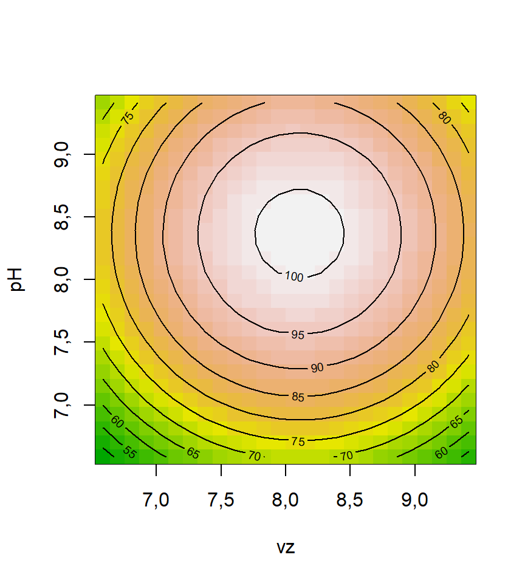
persp(rsm2, ~x1 + x2, zlab="y [%]",
col = rainbow(50), contours = ("colors"))
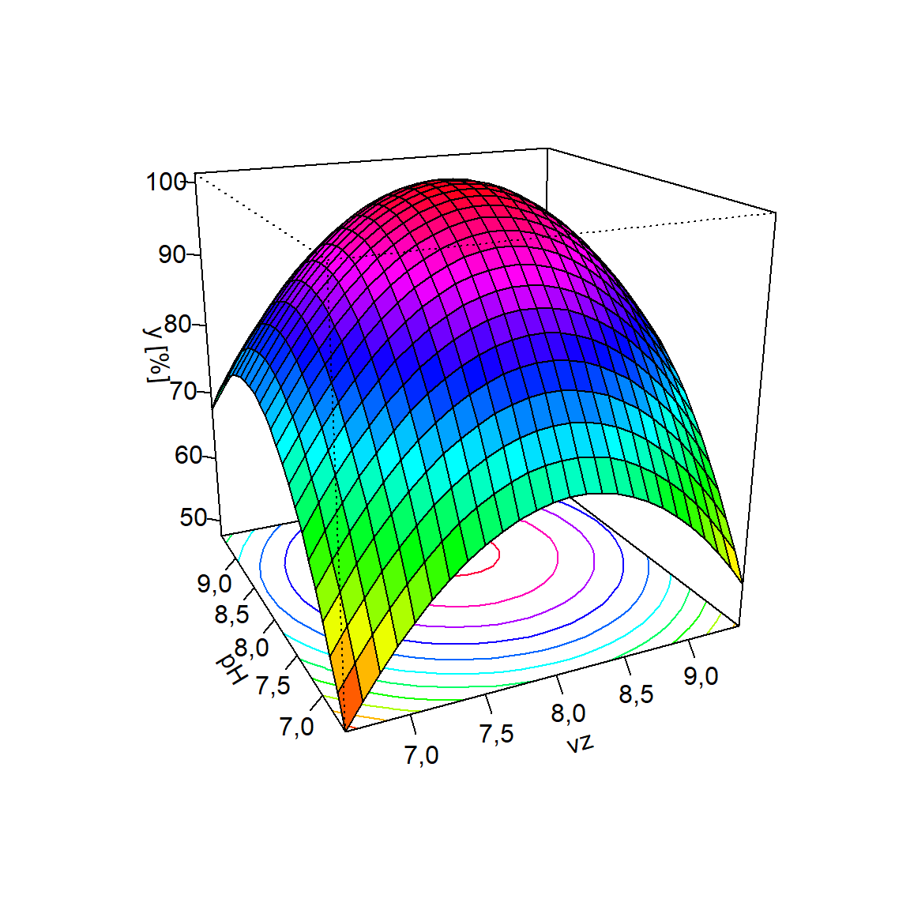
Outras visualizações podem ser concebidas para interpretar o efeito dos fatores na resposta de interesse, conforme Figura 7.7 e Figura 7.8 com códigos explicitados à seguir.
library(ggplot2)
# x1
x1_grid <- seq(min(ccd1$x1), max(ccd1$x1), 0.1)
center_grid <- rep(0,length(x1_grid))
x_range <- c(min(c(predict(rsm2,
newdata = data.frame(x1 = x1_grid,
x2 = center_grid)),
predict(rsm2,
newdata = data.frame(x2 = x1_grid,
x1 = center_grid)))),
max(c(predict(rsm2,
newdata = data.frame(x1 = x1_grid,
x2 = center_grid)),
predict(rsm2,
newdata = data.frame(x2 = x1_grid,
x1 = center_grid))))
)
p1 <- ggplot() +
geom_line(aes(x = x1_grid,
y = (predict(rsm2,
newdata = data.frame(x1 = x1_grid,
x2 = center_grid)))),
linewidth = 1,
colour = 'firebrick1') +
xlab("vz [mL/min]") +
ylab("sinal [%]") +
ylim(x_range) +
scale_x_continuous(breaks = c(-1, 0, 1), label = c(7,8,9)) +
theme_bw()
p2 <- ggplot() +
geom_line(aes(x = x1_grid,
y = (predict(rsm2,
newdata = data.frame(x2 = x1_grid,
x1 = center_grid)))),
linewidth = 1,
colour = 'dodgerblue3') +
xlab("pH") +
ylab("sinal [%]") +
ylim(x_range) +
scale_x_continuous(breaks = c(-1, 0, 1), label = c(7,8,9)) +
theme_bw()
library(ggpubr)
ggarrange(p1,p2, nrow=1)
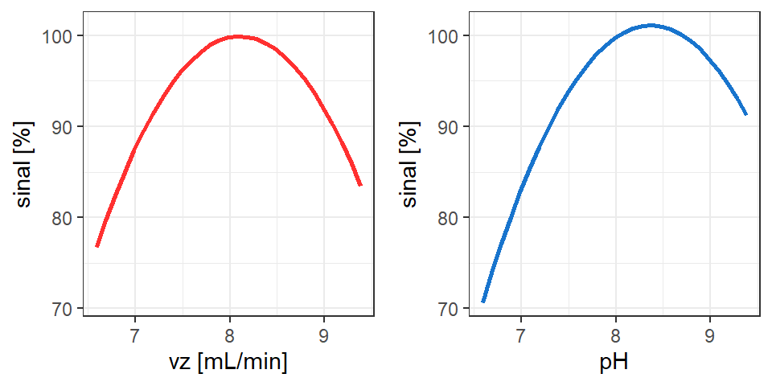
p12 <- ggplot() +
geom_line(aes(x = x1_grid,
y = predict(rsm2,
newdata = data.frame(x2 = x1_grid,
x1 = center_grid)),
color = "8", linetype = "8"), linewidth = 1) +
ggtitle('') +
xlab('pH') +
ylab('sinal [%]') +
ylim(58,103) +
scale_x_continuous(breaks = c(-1, 0, 1), label = c(7,8,9)) +
theme_bw()
x2_grid_1 = rep(-1,length(x1_grid))
x2_grid1 = rep(1,length(x1_grid))
p12 <- p12 +
geom_line(aes(x = x1_grid,
y = predict(rsm2,
newdata = data.frame(x2 = x1_grid,
x1 = x2_grid_1)),
color = "7", linetype = "7"), linewidth = 1) +
geom_line(aes(x = x1_grid,
y = predict(rsm2,
newdata = data.frame(x2 = x1_grid,
x1 = x2_grid1)),
color = "9", linetype = "9"), linewidth = 1) +
scale_color_manual(name = "vz",
values = c("7" = "orange1",
"8" = "green3",
"9" = "red1")) +
scale_linetype_manual(name = "vz",
values = c("7" = "dashed",
"8" = "longdash",
"9" = "solid"))
p12
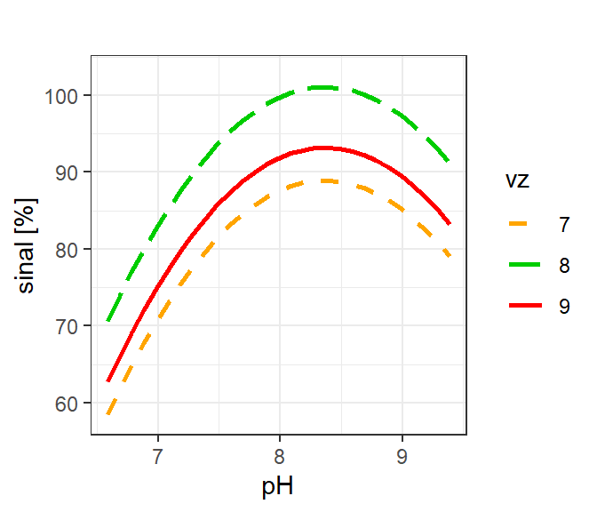
7.7 Condições de otimalidade de segunda ordem
Por ambas representações gráficas das Figura 7.7 e Figura 7.8 observa-se que o modelo obtido tem convexidade para baixo, apresentando ponto de máximo. Como no experimento do Exemplo 7.2 deseja-se maximizar a resposta, o ponto estacionário é suficiente para garantir o máximo rendimento no processo de estração de cobre. Existem casos, porém, que não é possível avaliar se o ponto estacionário é de interesse prático ou seja, sua natureza, de forma a saber se ele maximiza ou minimiza a função. Isso acontece porque quando \(k \ge 3\) a superfície de resposta não pode ser visualizada integralmente. Em tais casos é comum avaliar as condições de otimalidade de segunda ordem ou a natureza do ponto estacionário e a convexidade da superfície de resposta.
As condições de otimalidade de segunda ordem ou condições são obtidas a partir da matriz hessiana, ou seja, se por exemplo \(\mathbf H = \nabla^2 \hat y\) é positiva definida. A matriz \(\mathbf{H}\) é obtida conforme segue. Pode-se observar que ela consiste na matriz \(\mathbf{B}\) multiplicada por 2.
\[ \mathbf{H} = \nabla^2 \hat{y}(\mathbf{x}) = \left[ \begin{array}{cccc} \frac{\partial^2 \hat{y}(\mathbf{x})}{\partial x_1^2} & \frac{\partial^2 \hat{y}(\mathbf{x})}{\partial x_1 \partial x_2} & \cdots & \frac{\partial^2 \hat{y}(\mathbf{x})}{\partial x_1 \partial x_k} \\ \frac{\partial^2 \hat{y}(\mathbf{x})}{\partial x_2 \partial x_1} & \frac{\partial^2 \hat{y}(\mathbf{x})}{\partial x_2^2} & \cdots & \frac{\partial^2 \hat{y}(\mathbf{x})}{\partial x_2 \partial x_k} \\ \vdots & \vdots & \ddots & \vdots \\ \frac{\partial^2 \hat{y}(\mathbf{x})}{\partial x_k \partial x_1} & \frac{\partial^2 \hat{y}(\mathbf{x})}{\partial x_k \partial x_2} & \cdots & \frac{\partial^2 \hat{y}(\mathbf{x})}{\partial x_k^2} \end{array} \right] = \left[ \begin{array}{cccc} 2{\beta}_{11} & {\beta}_{12} & \cdots & {\beta}_{1k} \\ {\beta}_{12} & 2{\beta}_{22} & \cdots & {\beta}_{2k} \\ \vdots & \vdots & \ddots & \vdots \\ {\beta}_{1k} & {\beta}_{2k} & \cdots & 2{\beta}_{kk} \end{array} \right] = 2{\mathbf{B}} \]
Sabendo que a matriz \(\mathbf{B}\) é simétrica de ordem \(k \times k\), pelo teorema da decomposição espectral, existe uma matriz ortogonal \(\mathbf{P}\), \(k \times k\), tal que \(\mathbf{P}^T\mathbf{B}\mathbf{P} = \mathbf \Lambda\), que contém em cada coluna os autovetores \(w = [w_1, w_2, \cdots, w_k]\) associados aos autovalores de \(\mathbf{B}\). A matriz \(\mathbf \Lambda\) é a matriz diagonal de autovalores \(\lambda_i\), \(i = 1, …, k\), de \(\mathbf{B}\). Os sinais dos autovalores, \(\lambda_i\), determinam a natureza do ponto estacionário e o tipo de superfície de resposta. A Figura 7.9 ilustra uma superfície de resposta com orientação inclinada em relação aos eixos das variáveis independentes. Tal inclinação aparecerá sempre que os termos de interação, o qual compõe os termos fora da diagonal da matriz \(\mathbf B\) forem não nulos. As linhas que definem os eixos do modelo são os autovalores deste. É importante rotacionar o modelo, ou diagonalizar \(\mathbf B\), de forma que a análise dos sinais de \(\lambda_i\) viabilizem a interpretação da convexidade do modelo.
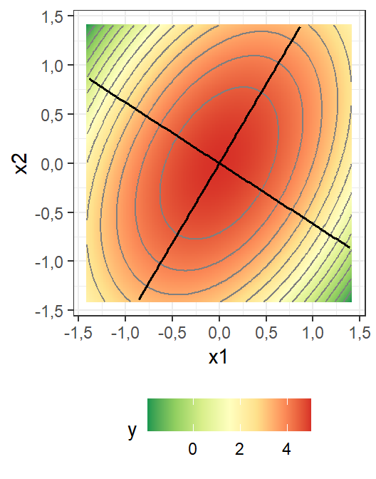
A interpretação das condições de otimalidade de segunda ordem para superfície de resposta pode ser feita conforme segue:
Se \(\lambda_1, \cdots, \lambda_k\) são negativos, \(\mathbf{B}\) é negativa definida, \(\hat y\) tem convexidade para baixo e o ponto estacionário é de máximo;
Se \(\lambda_1, \cdots, \lambda_k\) são positivos, \(\mathbf{B}\) é positiva definida, \(\hat y\) tem convexidade para cima e o ponto estacionário é de mínimo;
Se \(\lambda_1, \cdots, \lambda_k\) são mistos, \(\mathbf{B}\) é indefinida e o ponto estacionário é de sela.
A Figura 7.10 ilustra três exemplos de modelos com distintas características de convexidade. À esquerda um modelo com autovalores negativos, no meio um com autovalores positivos e à direita um com autovalores mistos, apresentando respectivamente ponto estacionário de máximo, de mínimo e de sela. É importante perceber que este último não é de máximo tampouco de mínimo. Na prática caso o objetivo seja maximizar a resposta é interessante obter uma superfície de resposta com convexidade para baixo. Caso o objetivo seja minimizar a resposta é interessante obter uma superfície de resposta com convexidade para cima. A superfície no formato de sela nunca é interessante, uma vez que o ponto estacionário é apenas um ponto onde a derivada é nula, mas não otimiza a função, independente do objetivo do estudo.
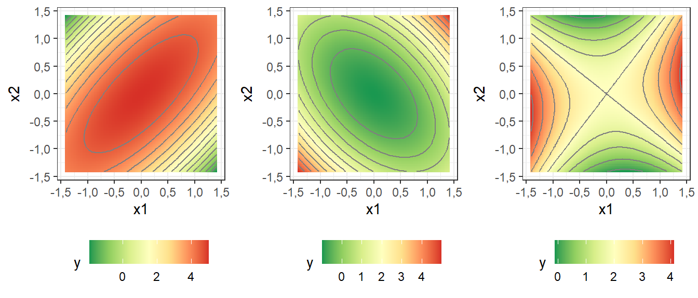
Para obter os autovalores de \(\mathbf{B}\) deve-se resolver o autoproblema \(|\mathbf{B} - \mathbf \lambda \mathbf I| = 0\), resultando ema uma equação polinomial de ordem \(k\) cujas raizes são os autovalores de \(\mathbf{B}\).
Exemplo 7.3 Seja um estudo para otimizar a composição de catalisadores à base de Co, Ce e W suportados em carvão ativado, com foco na reforma de \(CO_2–CH_4\). Os fatores de controle são x1: massa de Co (g), x2: massa de W (g) e x3: massa de Ce (g). A resposta consiste no rendimento de CO. https://doi.org/10.1016/j.ijhydene.2020.01.226
O planejamento para o Exemplo 7.3 pode ser obtido com o código a seguir. Os valores da resposta também são fornecidos.
plan <- ccd(basis = ~x1+x2+x3,
n0 = c(0,3),
randomize = F,
alpha = "rotatable",
coding = list(x1 ~ (Co - 10)/2, # Co
x2 ~ (W - 1.5)/0.5, # W
x3 ~ (Ce - 4)/1)) # Ce
plan run.order std.order Co W Ce Block
1 1 1 8,000000 1,0000000 3,000000 1
2 2 2 12,000000 1,0000000 3,000000 1
3 3 3 8,000000 2,0000000 3,000000 1
4 4 4 12,000000 2,0000000 3,000000 1
5 5 5 8,000000 1,0000000 5,000000 1
6 6 6 12,000000 1,0000000 5,000000 1
7 7 7 8,000000 2,0000000 5,000000 1
8 8 8 12,000000 2,0000000 5,000000 1
9 1 1 6,636414 1,5000000 4,000000 2
10 2 2 13,363586 1,5000000 4,000000 2
11 3 3 10,000000 0,6591036 4,000000 2
12 4 4 10,000000 2,3408964 4,000000 2
13 5 5 10,000000 1,5000000 2,318207 2
14 6 6 10,000000 1,5000000 5,681793 2
15 7 7 10,000000 1,5000000 4,000000 2
16 8 8 10,000000 1,5000000 4,000000 2
17 9 9 10,000000 1,5000000 4,000000 2
Data are stored in coded form using these coding formulas ...
x1 ~ (Co - 10)/2
x2 ~ (W - 1.5)/0.5
x3 ~ (Ce - 4)/1y <- c(88.36, 93.40, 89.22, 92.02, 91.28, 92.02, 89.62, 88.92,
85.98, 89.72, 91.43, 88.53, 95.66, 94.63,
94.38, 94.53, 94.08)
plan$y <- yA seguir realiza-se a análise completa via rsm. Observa-se que todos os termos do modelo foram significativos e o modelo apresentou excelente ajuste, com \(R^2_{aj} = 0,9894\). Apesar dos autovalores serem obtidos, neste caso eles não são úteis, dado que os autovalores são mistos, de forma que o modelo tem formato de sela.
res.rsm <- rsm(y ~ SO(x1,x2,x3), data = plan)
summary(res.rsm)
Call:
rsm(formula = y ~ SO(x1, x2, x3), data = plan)
Estimate Std. Error t value Pr(>|t|)
(Intercept) 94,341870 0,164148 574,7379 < 2,2e-16 ***
x1 1,037567 0,077085 13,4600 2,932e-06 ***
x2 -0,743744 0,077085 -9,6483 2,708e-05 ***
x3 -0,211780 0,077085 -2,7474 0,028613 *
x1:x2 -0,460000 0,100717 -4,5673 0,002582 **
x1:x3 -0,975000 0,100717 -9,6806 2,649e-05 ***
x2:x3 -0,530000 0,100717 -5,2623 0,001170 **
x1^2 -2,331911 0,084843 -27,4849 2,166e-08 ***
x2^2 -1,578842 0,084843 -18,6089 3,211e-07 ***
x3^2 0,247261 0,084843 2,9143 0,022521 *
---
Signif. codes: 0 '***' 0,001 '**' 0,01 '*' 0,05 '.' 0,1 ' ' 1
Multiple R-squared: 0,9954, Adjusted R-squared: 0,9894
F-statistic: 167,6 on 9 and 7 DF, p-value: 2,464e-07
Analysis of Variance Table
Response: y
Df Sum Sq Mean Sq F value Pr(>F)
FO(x1, x2, x3) 3 22,869 7,6230 93,937 5,112e-06
TWI(x1, x2, x3) 3 11,545 3,8483 47,422 5,104e-05
PQ(x1, x2, x3) 3 87,991 29,3302 361,429 4,909e-08
Residuals 7 0,568 0,0812
Lack of fit 5 0,463 0,0926 1,764 0,4001
Pure error 2 0,105 0,0525
Stationary point of response surface:
x1 x2 x3
0,1693026 -0,3289331 0,4095174
Stationary point in original units:
Co W Ce
10,338605 1,335533 4,409517
Eigenanalysis:
eigen() decomposition
$values
[1] 0,3614754 -1,5213599 -2,5036078
$vectors
[,1] [,2] [,3]
x1 0,1675212 0,30486530 0,9375467
x2 0,1138866 -0,95060326 0,2887616
x3 -0,9792683 -0,05840032 0,1939663A Figura 7.11 ilustra gráficos de contorno obtidos com código abaixo. É importante entender que cada visualização consiste em um corte do modelo que não pode ser visualizado de forma integral, uma vez que está no \(\mathcal R ^4\). Logo, para cada par de variáveis plotadas, a remanescente é fixada, neste caso no nível central.
par(mfrow = c(1,3))
contour(res.rsm, ~x1 + x2 + x3, image = TRUE)
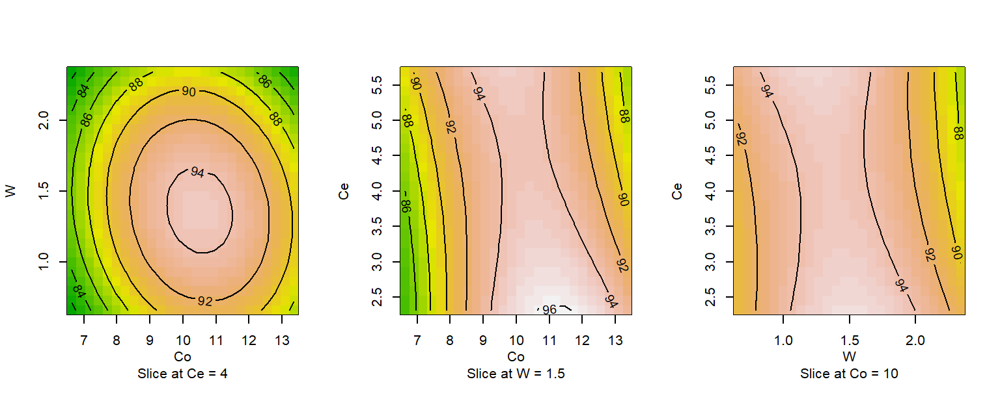
7.8 Otimização não linear restrita
Para os casos onde o modelo apresenta formato de sela ou então apresenta convexidade ao contrário do sentido desejado para otimização, sugere-se realizar a otimização não linear restrita que, no contexto da RSM, é chamada de análise rígida. Por exemplo, seja o caso onde deseja-se minimizar a resposta, a Equação 7.9 define a formulação da otimização restrita, onde a restrição \(\mathbf x^T\mathbf x \leq \rho^2\) define a região experimental, podendo ser escrita como \(x_1^2 + x_2^2 + \cdots + x_k^2 \leq \rho^2\).
\[ \begin{align} \min_{\mathbf x} & \{\hat y = \beta_0 + \mathbf{x}^T\mathbf b + \mathbf{x}^T\mathbf B \mathbf x\} \\ \textrm{s.t.: } & \mathbf x^T\mathbf x \leq \rho^2\\ \end{align} \tag{7.9}\]
O código à seguir pode ser utilizado para maximizar o rendimento de CO considerando o modelo de superfície de resposta estimado restrito à região experimental. A restrição de desigualdade g_x foi definida. O comando solnl do pacote NlcOptim permite a minimização de funções usando o algoritmo de programação sequencial quadrática, o qual admite restrições. Tal comando foi implementado para minimização. Como deseja-se maximizar o rendimento, usa-se o artifício de minimizar o negativo da função.
y_hat <- function(x){
y_hat <- predict(res.rsm, newdata = data.frame(x1 = x[1],
x2 = x[2],
x3 = x[3]))
return(-y_hat)
}
ro <<- (2^3)^0.25 # raio do planejamento
# restrição esférica
g_x <- function(x){
g1 <- x[1]^2 + x[2]^2 + x[3]^2 - ro^2
return(list(ceq=NULL,c=g1))
}
x0 <- rep(0,3)
# Otimização
library(NlcOptim)
res.otim <- solnl(X = x0, objfun = y_hat, confun = g_x)A seguir obtém-se os níveis ótimos codificados dos parâmetros.
res.otim$par [,1]
[1,] 0,47133056
[2,] -0,02587354
[3,] -1,61418871Finalmente obtém-se o rendimento ótimo.
1
96,04244 Felizmente o pacote rsm também apresenta a função steepest que viabiliza a obtenção do ótimo restrito à região esférica. A pequena diferença no resultado é devido ao passo utilizado de 0,01, neste caso.
# Analise rigida
otim <- steepest(res.rsm, dist=seq(0, ro, by=.01), descent = F)Path of steepest ascent from ridge analysis:# otim
otim[nrow(otim),] dist x1 x2 x3 | Co W Ce | yhat
169 1,68 0,471 -0,026 -1,612 | 10,942 1,487 2,388 | 96,0397.9 Planejamento Box-Behnken
O planejamento Box-Behnken (Box-Behnken Design - BBD) foi proposto pelos pesquisadores George Box e Bonald Behnken nos anos 60, como proposta alternativa para obtenção de modelos de superfície de resposta, garantindo boas propriedades estatísticas e baixo custo na experimentação. Para \(k\leq6\) fatores o planejamento consiste em blocos de combinações de fatoriais \(2^2\) com os fatores remanescentes fixos no ponto central. A Figura 7.12 ilustra o planejamento para \(k=3\) com três pontos centrais, com correspondência com a Tabela 7.4. Pode-se observar em azul os 4 primeiros pontos consistindo em um fatorial \(2^2\) para \(x_1\) e \(x_2\) com \(x_3\) no ponto central, os pontos 5 a 8 com um fatorial \(2^2\) para \(x_1\) e \(x_3\) e \(x_2\) no ponto central e os pontos 9 a 12 com um fatorial \(2^2\) para \(x_2\) e \(x_3\) e \(x_1\) no ponto central, além de três pontos centrais nos experimentos 13 a 15. O número de pontos centrais pode ser customizado. Para \(k=6\) ou mais fatores ao invés de combinações de fatoriais \(2^2\) são considerados fatoriais \(2^3\).
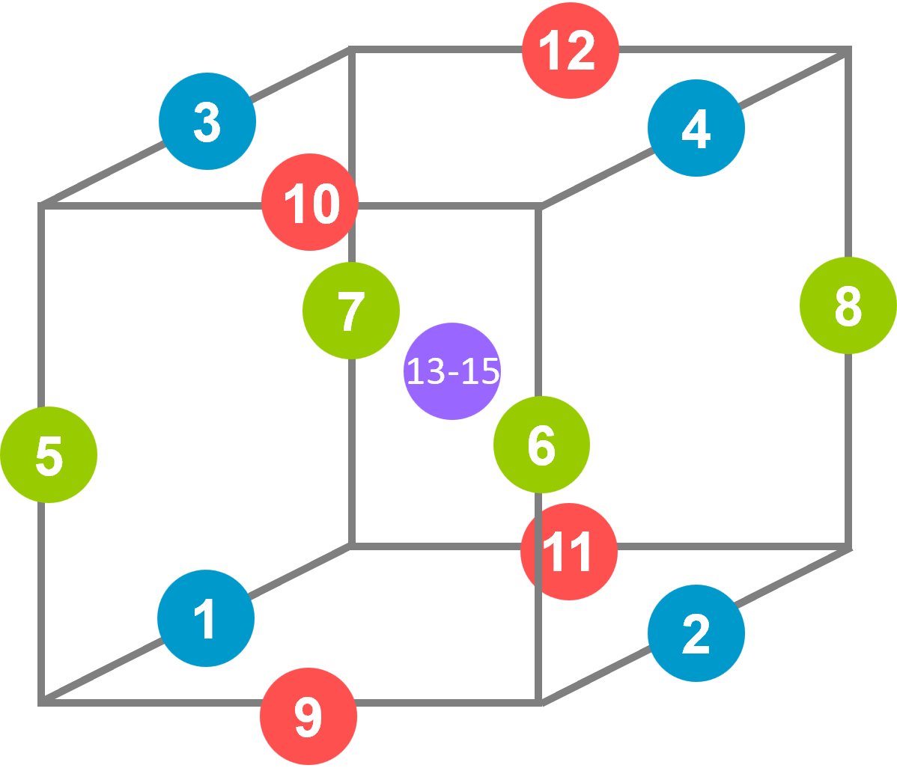
| Ordem | x₁ | x₂ | x₃ |
|---|---|---|---|
| 1 | -1 | -1 | 0 |
| 2 | 1 | -1 | 0 |
| 3 | -1 | 1 | 0 |
| 4 | 1 | 1 | 0 |
| 5 | -1 | 0 | -1 |
| 6 | 1 | 0 | -1 |
| 7 | -1 | 0 | 1 |
| 8 | 1 | 0 | 1 |
| 9 | 0 | -1 | -1 |
| 10 | 0 | 1 | -1 |
| 11 | 0 | -1 | 1 |
| 12 | 0 | 1 | 1 |
| 13 | 0 | 0 | 0 |
| 14 | 0 | 0 | 0 |
| 15 | 0 | 0 | 0 |
Um planejamento BBD para \(k\leq5\) apresenta \(N=2k(k-1)+n_c\) experimentos no total. Para os pontos nas arestas do cubo a distância até os pontos centrais é exatamente igual a \(\sqrt{2}\). Ou seja, o BBD é um planejamento esférico com raio igual \(\sqrt{2}\) para \(k\leq5\) e \(\sqrt{3}\) para \(k\geq6\). Recomenda-se entretanto realizar RSM para número baixo de fatores. É importante observar que o BBD só é possível para \(k\geq3\) fatores.
A Tabela 7.5 compara o número de ensaios para o BBD e o CCD segundo o número de fatores. Observa-se que para \(3\leq k\leq4\) o BBD é uma opção interessante, sendo mais econômico que o CCD. Já para \(k \geq5\) o CCD resulta em número menor de ensaios. É importante enfatizar que a escolha não deve-se basear somente no número de experimentos, mas também na estratéga experimental almejada. Por exemplo, o CCD permite a experimentação sequencial. Outra questão é que enquanto no CCD o raio do planejamento cresce com \(k\), no BBD ele é fixo, de forma que, ao se realizar procedimentos de otimização restrita para casos onde as condições de otimalidade de segunda ordem não são de interesse, a região experimental codificada é limitada comparativamente ao CCD. Obviamente tudo depende da relativa escolha dos níveis decodificados dos fatores em estudo.
| k | CCD | BBD |
|---|---|---|
| 2 | 8 + \(n_c\) | - |
| 3 | 14 + \(n_c\) | 12 + \(n_c\) |
| 4 | 24 + \(n_c\) | 24 + \(n_c\) |
| 5 | 26* + \(n_c\) | 40 + \(n_c\) |
| 6 | 44 + \(n_c\) | 48 + \(n_c\) |
| 7 | 78 + \(n_c\) | 56 + \(n_c\) |
| *fatorial fracionado \(2^{5-1}\) |
Exemplo 7.4 Seja um experimento de sinterização de inibição seletiva de peças de polietileno de alta densidade com os seguintes fatores de controle: x1: altura da camada (mm), x2: Energia do aquecedor (\(J/mm^2\)), x3: Velocidade de avanço do aquecedor (mm/s) e x4: Velocidade de avanço da impressora (mm/min). A resposta y consiste no encolhimento das peças no sentido da largura. # https://link.springer.com/article/10.1007%2Fs40799-018-0286-6
A Tabela Tabela 7.6 apresenta o planejamento com a resposta, o qual pode ser obtido com o código abaixo.
# Planejamento
design <- bbd(k = ~x1+x2+x3+x4,
block = F,
n0 = 5,
randomize = F,
coding = list(x1 ~ (Ac - 0.2)/0.1,
x2 ~ (Ea - 25.32)/3.16,
x3 ~ (vf_a - 3.5)/0.5,
x4 ~ (vf_p - 100)/20))
# desvio na largura
width <- c(5.3533, 5.2615, 5.0008, 4.2712, 4.5840, 2.7470, 3.8086, 3.9839,
4.3630, 3.5519, 4.0534, 4.0031, 5.1495, 4.5581, 4.1959, 3.5946,
5.1642, 4.0103, 3.6354, 4.2529, 3.5171, 4.4485, 5.3879, 3.4132,
3.8905, 4.3263, 4.2203, 3.9451, 3.9024)
design$y <- width| run.order | std.order | x1 | x2 | x3 | x4 | y |
|---|---|---|---|---|---|---|
| 1 | 1 | -1 | -1 | 0 | 0 | 5,3533 |
| 2 | 2 | 1 | -1 | 0 | 0 | 5,2615 |
| 3 | 3 | -1 | 1 | 0 | 0 | 5,0008 |
| 4 | 4 | 1 | 1 | 0 | 0 | 4,2712 |
| 5 | 5 | 0 | 0 | -1 | -1 | 4,5840 |
| 6 | 6 | 0 | 0 | 1 | -1 | 2,7470 |
| 7 | 7 | 0 | 0 | -1 | 1 | 3,8086 |
| 8 | 8 | 0 | 0 | 1 | 1 | 3,9839 |
| 9 | 9 | -1 | 0 | 0 | -1 | 4,3630 |
| 10 | 10 | 1 | 0 | 0 | -1 | 3,5519 |
| 11 | 11 | -1 | 0 | 0 | 1 | 4,0534 |
| 12 | 12 | 1 | 0 | 0 | 1 | 4,0031 |
| 13 | 13 | 0 | -1 | -1 | 0 | 5,1495 |
| 14 | 14 | 0 | 1 | -1 | 0 | 4,5581 |
| 15 | 15 | 0 | -1 | 1 | 0 | 4,1959 |
| 16 | 16 | 0 | 1 | 1 | 0 | 3,5946 |
| 17 | 17 | -1 | 0 | -1 | 0 | 5,1642 |
| 18 | 18 | 1 | 0 | -1 | 0 | 4,0103 |
| 19 | 19 | -1 | 0 | 1 | 0 | 3,6354 |
| 20 | 20 | 1 | 0 | 1 | 0 | 4,2529 |
| 21 | 21 | 0 | -1 | 0 | -1 | 3,5171 |
| 22 | 22 | 0 | 1 | 0 | -1 | 4,4485 |
| 23 | 23 | 0 | -1 | 0 | 1 | 5,3879 |
| 24 | 24 | 0 | 1 | 0 | 1 | 3,4132 |
| 25 | 25 | 0 | 0 | 0 | 0 | 3,8905 |
| 26 | 26 | 0 | 0 | 0 | 0 | 4,3263 |
| 27 | 27 | 0 | 0 | 0 | 0 | 4,2203 |
| 28 | 28 | 0 | 0 | 0 | 0 | 3,9451 |
| 29 | 29 | 0 | 0 | 0 | 0 | 3,9024 |
A análise pode ser realizada com o comando rsm, conforme segue. Pelos resultados observa-se que apenas as interações \(x_1x_2\), \(x_1x_4\) e \(x_2x_3\) não foram significativas, além do termo quadrático \(x_3^2\). O modelo apresenta um bom ajuste, com \(R_{aj}^2 = 0,9198\), porém sugere-se ao leitor tentar reduzir o modelo via lm e step para avaliar se é possível melhorar um pouco mais, aproximando \(R_{aj}^2\) de \(R^2\). Já é possível constatar pela análise dos sinais dos autovalores que o ponto estacionário não é últil para minimizar o desvio dimensional no sentido da largura.
# Analise
rsm.bbd <- rsm(y ~ SO(x1,x2,x3,x4), data = design)
summary(rsm.bbd)
Call:
rsm(formula = y ~ SO(x1, x2, x3, x4), data = design)
Estimate Std. Error t value Pr(>|t|)
(Intercept) 4,056920 0,081357 49,8655 < 2,2e-16 ***
x1 -0,184933 0,052516 -3,5215 0,0033875 **
x2 -0,298233 0,052516 -5,6789 5,693e-05 ***
x3 -0,405417 0,052516 -7,7199 2,068e-06 ***
x4 0,119883 0,052516 2,2828 0,0385872 *
x1:x2 -0,159450 0,090960 -1,7530 0,1014672
x1:x3 0,442850 0,090960 4,8686 0,0002485 ***
x1:x4 0,190200 0,090960 2,0910 0,0552423 .
x2:x3 -0,002475 0,090960 -0,0272 0,9786765
x2:x4 -0,726525 0,090960 -7,9873 1,395e-06 ***
x3:x4 0,503075 0,090960 5,5307 7,405e-05 ***
x1^2 0,323777 0,071429 4,5328 0,0004688 ***
x2^2 0,477602 0,071429 6,6864 1,033e-05 ***
x3^2 -0,080797 0,071429 -1,1312 0,2769959
x4^2 -0,308648 0,071429 -4,3210 0,0007043 ***
---
Signif. codes: 0 '***' 0,001 '**' 0,01 '*' 0,05 '.' 0,1 ' ' 1
Multiple R-squared: 0,9599, Adjusted R-squared: 0,9198
F-statistic: 23,94 on 14 and 14 DF, p-value: 2,31e-07
Analysis of Variance Table
Response: y
Df Sum Sq Mean Sq F value Pr(>F)
FO(x1, x2, x3, x4) 4 3,6225 0,90563 27,3647 1,738e-06
TWI(x1, x2, x3, x4) 6 4,1546 0,69243 20,9225 3,067e-06
PQ(x1, x2, x3, x4) 4 3,3140 0,82850 25,0338 2,984e-06
Residuals 14 0,4633 0,03310
Lack of fit 10 0,3000 0,03000 0,7347 0,6856
Pure error 4 0,1633 0,04083
Stationary point of response surface:
x1 x2 x3 x4
1,0579092 0,1742857 -0,8902676 -0,4104952
Stationary point in original units:
Ac Ea vf_a vf_p
0,3057909 25,8707427 3,0548662 91,7900965
Eigenanalysis:
eigen() decomposition
$values
[1] 0,6966486 0,3725336 -0,0899158 -0,5673314
$vectors
[,1] [,2] [,3] [,4]
x1 0,4113305 0,78063120 0,4678823 0,05008278
x2 -0,7896263 0,50636028 -0,1821966 0,29477793
x3 0,2429853 0,36542084 -0,7745350 -0,45554504
x4 0,3850399 -0,02611146 -0,3846896 0,83849651Não há indícios para rejeição da hipótese de normalidade dos resíduos, dado resultado do teste de Shapiro-Wilk exposto abaixo.
# Normalidade
shapiro.test(rsm.bbd$residuals)
Shapiro-Wilk normality test
data: rsm.bbd$residuals
W = 0,93612, p-value = 0,07937A Figura 7.13 ilustra gráficos de contorno para desvio dimensional de peças obtidas via sinterização de inibição seletiva.
# Graficos
par(mfrow = c(2,3))
contour(rsm.bbd, ~x1 + x2 + x3 + x4, image = TRUE)
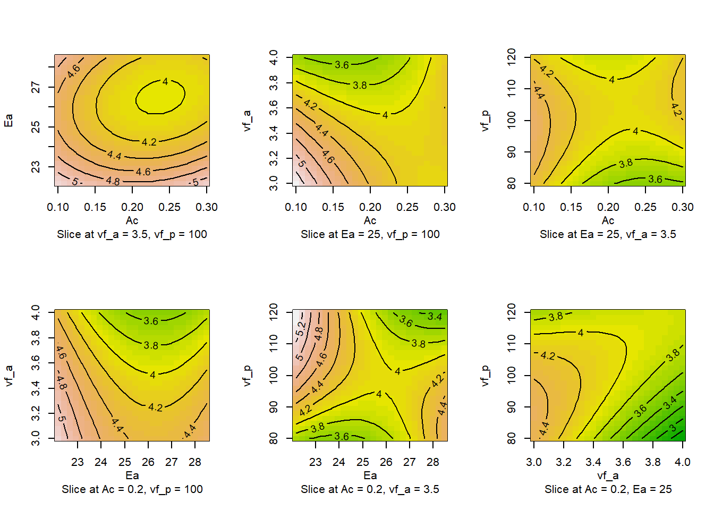
Por fim, apresenta-se o código e resultado da otimização restrita, sendo expostos níveis dos fatores que minimizam o desvio dimensional. Recomenda-se \(Ac\) = 0,1987 \(mm\), \(Ea\) = 24,628 \(J/mm^2\), \(Vf_a\) = 3,93 \(mm/s\) e \(Vf_p\) = 78,36 \(mm/min\). O desvio mínimo predito foi \(\hat y\) = 2,6 \(mm\).
# Otimizacao restrita
otimo <- steepest(rsm.bbd, dist=seq(0, sqrt(2), by=.1), descent=TRUE)Path of steepest descent from ridge analysis:otimo[nrow(otimo),] dist x1 x2 x3 x4 | Ac Ea vf_a vf_p | yhat
15 1,4 -0,013 -0,219 0,86 -1,082 | 0,1987 24,62796 3,93 78,36 | 2,606Bibliografia
ANDERSON-COOK, C. M.; BORROR, C. M.; MONTGOMERY, D. C. Response surface design evaluation and comparison. Journal of Statistical Planning and Inference, v. 139, n. 2, p. 629-641, 2009.
BOX, G. E. P.; DRAPER, N. R. A basis for the selection of a response surface design. Journal of the American Statistical Association, v. 54, n. 287, p. 622-654, 1959.
BOX, G. E. P.; DRAPER, N. R. Response surfaces, mixtures, and ridge analyses. New Jersey: John Wiley & Sons, 2007.
BOX, G. E. P.; HUNTER, J. S. Multi-factor experimental designs for exploring response surfaces. The Annals of Mathematical Statistics, p. 195-241, 1957.
BOX, G. E. P.; HUNTER, J. S. The 2k-p fractional factorial designs. Technometrics, v. 3, n. 3, p. 311-351, 1961.
BOX, G. E. P.; HUNTER, J. S.; HUNTER, William Gordon. Statistics for experimenters: design, innovation, and discovery. New York: Wiley-Interscience, 2005.
BOX, G. E. P.; WILSON, K. B. On the Experimental Attainment of Optimum Conditions. Journal of the Royal Statistical Society. Series B (Methodological), v. 13, n. 1, p. 1-45, 1951.
DEL CASTILLO, E. Process optimization: a statistical approach. New York: Springer, 2007.
DRAPER, N. R.; GUTTMAN, I. An index of rotatability. Technometrics, v. 30, n. 1, p. 105-111, 1988.
DRAPER, N. R.; LIN, D. K. J. Small response-surface designs. Technometrics, v. 32, n. 2, p. 187-194, 1990.
DUNN, K. Process Improvement Using Data. Disponível em: http://learnche.org/pid, 2010. Acesso em: 05/2025.
GIOVANNITTI-JENSEN, A.; MYERS, R. H. Graphical assessment of the prediction capability of response surface designs. Technometrics, v. 31, n. 2, p. 159-171, 1989.
KHURI, A. I. A measure of rotatability for response-surface designs. Technometrics, v. 30, n. 1, p. 95-104, 1988.
LUCAS, J. M. Which response surface design is best: a performance comparison of several types of quadratic response surface designs in symmetric regions. Technometrics, v. 18, n. 4, p. 411-417, 1976.
MONTGOMERY, D. C. Design and analysis of experiments. John Wiley & Sons, 2013.
MORRIS, M. D. A class of three-level experimental designs for response surface modeling. Technometrics, v. 42, n. 2, p. 111-121, 2000.
MYERS, R. H.; MONTGOMERY, D. C.; ANDERSON-COOK, C. M. Response surface methodology: process and product optimization using designed experiments. John Wiley & Sons, 2016.
NOCEDAL, J.; WRIGHT, S. J. Numerical optimization. Springer Science, v. 35, n. 67-68, p. 7, 2006.
OYEJOLA, B. A.; NWANYA, J. C. Selecting the right Central Composite Design. International Journal of Statistics and Applications, v. 5, n. 1, p. 21-30, 2015.
RAO, S. S. Engineering optimization: theory and practice. John Wiley & Sons, 2009.
SEBER, G. A. F.; LEE, A. J. Linear regression analysis. John Wiley & Sons, 2003.
UKAEGBU, E. C.; CHIGBU, P. E. Graphical evaluation of the prediction capabilities of partially replicated orthogonal central composite designs. Quality and Reliability Engineering International, v. 31, n. 4, p. 707-717, 2015.
WEISBERG, S. Applied linear regression. John Wiley & Sons, 2005.